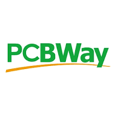
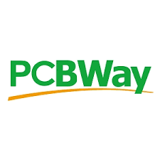

January-June 2021
matt-downing.com
| Goal: Develop schematic and first PCB prototypes for an open loop pipette using CAN and USB communication. Develop initial firmware for testing system peripherals. | ||
| Challenge: Learn new PCB design tool (Circuit Maker). Learn firmware programming tool (STM32CubeIDE). Developing most of the system from the beginning. Sourcing components for the entire system that work in a small form factor. Condensing design down to fit on a tight size constraint of PCB. | |
|
| Success: Developed five prototype PCBs each incorporating new features and fixing hardware bugs. Got the system from concept to proof of concept and turned over project to full time engineer for full product development. Created initial firmware to test and prove out CAN communication as well as other peripherals. Transferred knowledge to full time firmware engineer to develop product. |

 

| Goal: Create a PCB to control an individually addressable LED strip via 24V power supply on gantry system. Create software to switch between colors depending on state of system (running, standby, error). |  |
|
| Challenge: LED strip signal was not very stable over long wire distance, which was necessary to fit onto system. Had to make system robust so that it could be replicated across many prototypes and easily installed. |  |
|
| Success: Prototype worked and was installed on three gantry systems sent to customers and managment. Software worked and was implemented into main code base to integrate with rest of system. |


| Goal: Create a way for the power (24V) of a gantry system to be remotely controlled on and off via the 3V3 digital I/O pins of a Raspberry Pi so that remote software developers could control the system in case of major issue. |  |
|
| Challenge: Make it work reliably so that it could be trusted to stop motor system in case of issue when being worked on remotely. Have a 3V3 signal control a 24V relay in a cost-effective way. |  |
|
| Success: System worked and was implemented on a gantry system that was being coded and tested remotely. Raspberry Pi pin was able to control power for system without shutting down Pi so that it could be restarted remotely as well. |


| Goal: Create interface board to program via J-Link debugger with a specific connector. No alternative was available on the market. |  |
|
| Challenge: Challenging documentation on how the connectors were supposed to be connected. No off-the-shelf solutions were available. Make the connector small to fit on boards in tight spaces. |  |
|
| Success: First prototype worked but had issues with not being easy to install. Second prototype was smaller and was solution adopted by office for programming the boards moving forward. |  |